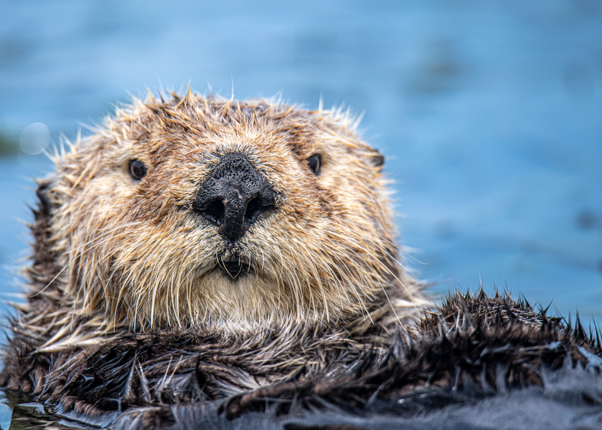
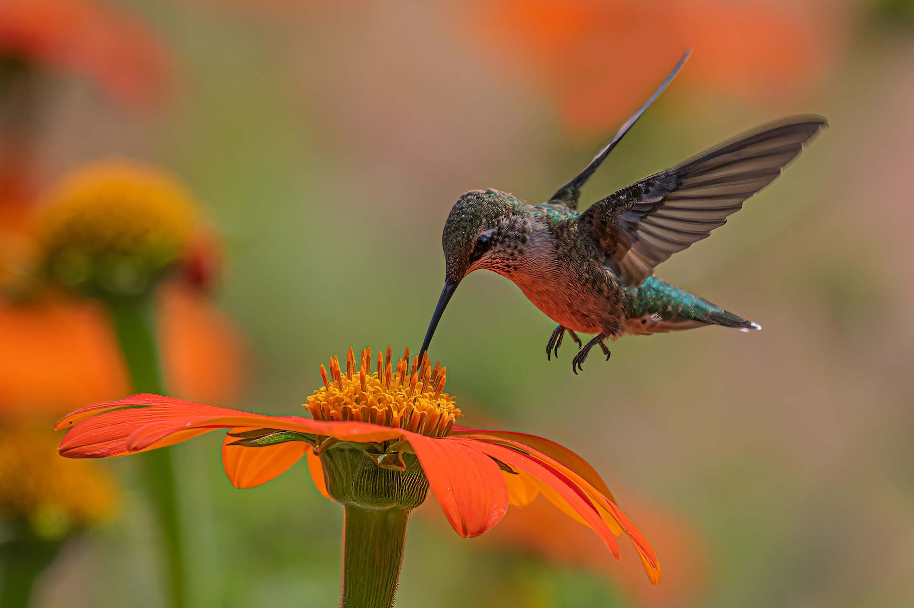
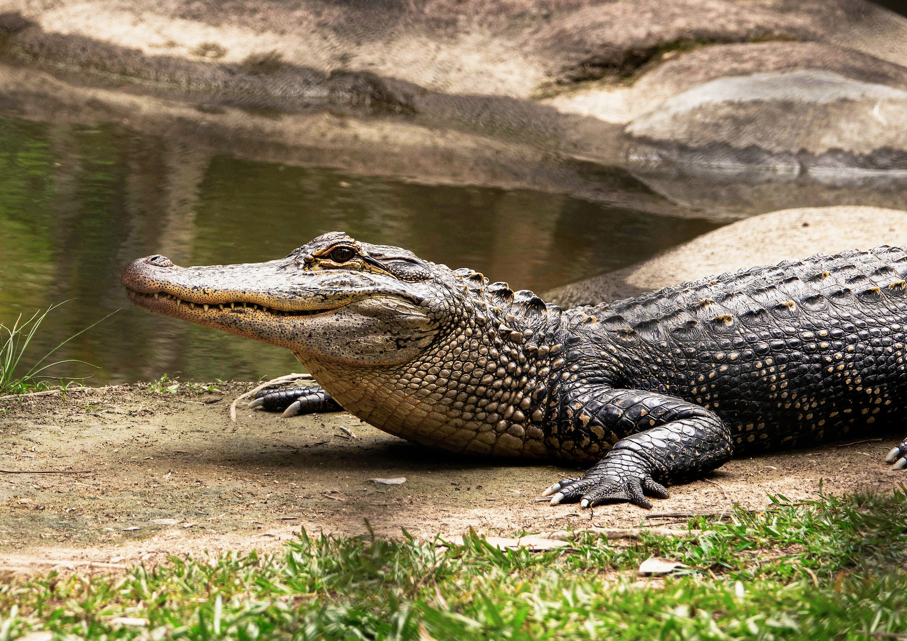

Just cute animals and funfacts

Otter
Sea otters, particularly mothers and pups, sometimes hold hands while floating on their backs. Hand-holding keeps the otters from drifting away from each other and their food source while they sleep.

Hummingbird
Hummingbirds are the only birds that can fly backwards.

Crocodile
Crocodiles cannot stick their tongue out.